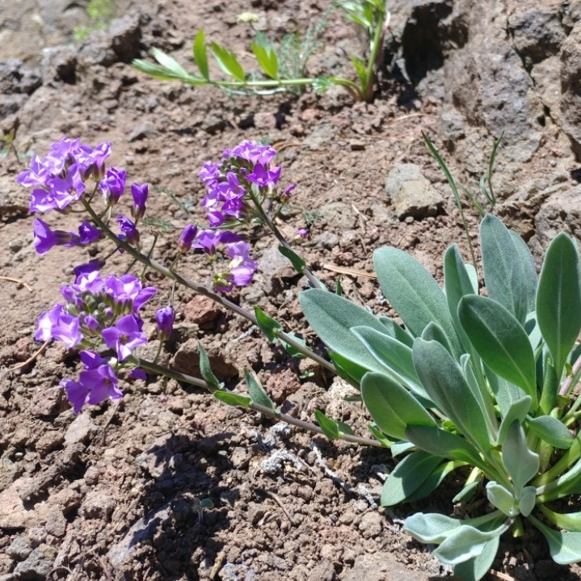

Phoenicaulis cheiranthoides
Common name
Daggerpod
Family
Brassicaceae
Family common name
Mustard family
Blooms
March - August
Habitat
Basalt outcrops, rocky soils. at mid- to high-elevations.
Range Map